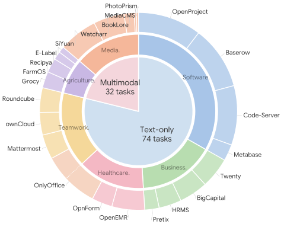
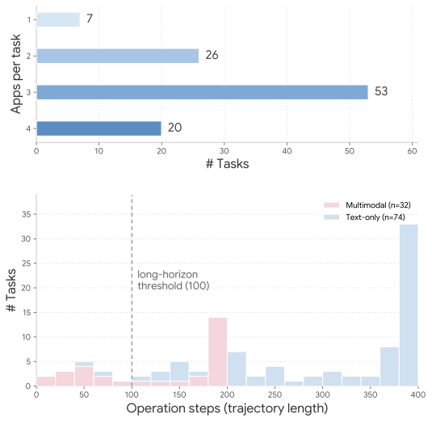
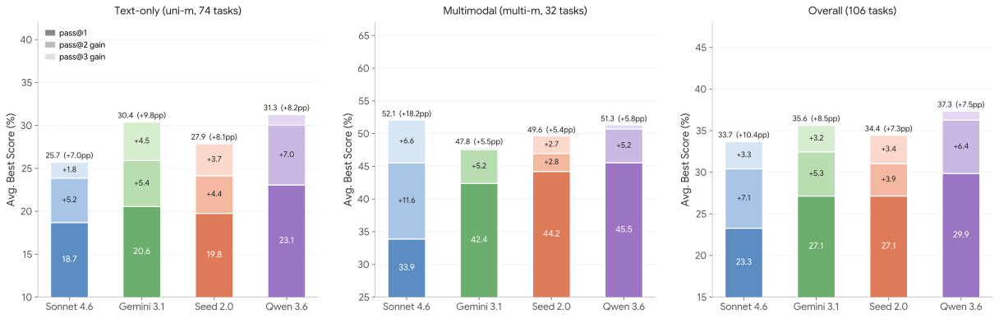
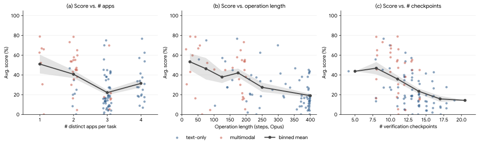

SaaS-Bench 解读：Computer-Use Agent 为什么还不是可靠的 SaaS 工作者
@sheriyuo 的判断很锋利：只要评分从“每一步点对了多少”切换到“真实 SaaS 后端状态是否全部正确”，当前 Computer-Use Agent 的可靠性就会塌陷。SaaS-Bench 的价值不只是给模型排榜，而是把 agent 评测从网页操作迁移到专业工作流终态验证。
2. 它到底在解决什么问题
SaaS-Bench 针对的是一个评测错觉：很多 CUA benchmark 证明 agent 能完成短页面交互、单应用任务或简化网页任务，但不能证明它能在真实业务软件里完成跨系统流程。
“Agents look fine if you score per click. Once you require the actual outcome, they collapse.”
对 @sheriyuo 原帖观点的短引。报告后文会解释为什么这个落差不是偶然，而是长程组合任务的结构性结果。点击、输入、滚动只是低层动作。业务完成需要正确创建记录、更新状态、生成文档、发送邮件，并保持数据在多个系统间一致。
真实 SaaS 有数据库、API、权限、缓存、异步提交和业务约束。页面上看起来像成功，不等于 verify.py 能在 DB/API/文件系统里找到正确结果。
长任务由多个 checkpoint 组成。一个早期实体类型错误可能让后续 invoice、payment、report 和 event 全部挂掉。
为什么 SaaS 是更接近真实工作的评测环境
SaaS 系统承载的是现代知识工作的常规基础设施：CRM、财务、HR、医疗记录、项目管理、文档协作、文件存储和邮件。它们不是静态网页，而是带登录、带持久数据库、带业务规则、带跨应用依赖的生产型软件。一个 agent 如果只会从屏幕上识别按钮，却不知道“客户”“供应商”“公司客户”“个人客户”在不同应用中的实体语义，就很容易把表面顺畅的操作链变成后端不可验证的错误状态。
3. SaaS-Bench 的设计：真实系统、真实状态、严格验证
SaaS-Bench 把 23 个开源 SaaS 系统容器化，给 agent 浏览器访问权限，然后用任务自带的 verify.py 在任务结束后检查真实系统状态。这个设计让评测对象从“agent 会不会操作 UI”升级为“agent 能不能完成专业工作”。



任务不是让 LLM 随便生成的
论文描述了一条 Builder-Challenger-Refiner 流程：从领域和职业角色出发构造 workflow seed，LLM Builder 生成任务模板和实例，human Challenger 检查歧义、可执行性、专业真实性和可验证性，human Refiner 决定接受、修订或拒绝。之后还要过 static check 和 execution check。官方 blog 声称只有 45% candidate tasks 能通过全流程，这说明作者试图避免“看起来像业务任务、实际上不可执行或不可验证”的 benchmark 垃圾数据。
4. 最关键的评分差异：Checkpoint Score vs Resolved Score
SaaS-Bench 的思想核心是双指标：既记录 agent 做对了多少局部检查，也记录它是否真正完成整件事。@sheriyuo 把这点概括成：Checkpoint 和 Resolved 的 gap 是尸体埋着的地方。
每个任务有多个带权重的 checkpoint，验证 expected final state 或 artifact。Checkpoint Score 是通过 checkpoint 权重除以总权重，表示“局部进展”。它适合诊断 agent 卡在哪一步。
只有任务所有 checkpoint 通过才为 1，否则为 0。它回答的是生产环境最关心的问题：这个工作流最后有没有真的完成。
长程组合任务为什么容易“局部不错、整体失败”？假设每个 checkpoint 独立通过概率为 \(p\)，任务有 \(N\) 个 checkpoint，则全任务通过概率近似为：
\[ P(\text{resolved}) = p^N \]即使 \(p = 0.95\)、\(N = 12\)，\(p^N \approx 0.54\)。如果真实 per-checkpoint pass rate 更低，且 checkpoint 之间还存在依赖传播，Resolved Score 近零就不是意外，而是组合可靠性的数学结果。
这也是为什么只优化 step-level reward 或单步 action prediction 不够。长程业务任务需要的是 checkpoint 级别的闭环确认、依赖图上的错误隔离，以及最终 artifact 的可验证一致性。
5. 结果：能做一点事，但还不可靠
论文主榜和官方 blog 的 leaderboard 都显示了同一件事：总体 checkpoint 能到 20% 到 40% 多，但 resolved 仍低到不能称为可靠业务执行。注意：blog 在 2026-05-25 更新了比论文更多的新模型结果，因此本文分别标注来源。
| 来源 | 模型 | Checkpoint / Overall | Resolved | 含义 |
|---|---|---|---|---|
| 官方 blog leaderboard | Claude Opus 4.7 | 43.9% | 3.8% | 截至 blog 抓取时最高 checkpoint 分数；端到端完成仍低。 |
| 官方 blog leaderboard | GPT-5.5 High | 43.8% | 1.9% | 局部分数接近 Opus 4.7，但严格完成率更低。 |
| 论文 Table 2 | Claude Opus 4.6 | 43.2% | 1.9% | 论文版最强 checkpoint 分数，但 resolved 仍不到 2%。 |
| 论文 Table 2 | GPT-5.4 High | 37.0% | 3.8% | 论文版最高 resolved，但也只有 4/106 左右的量级。 |
| 论文 Table 2 | Gemini 3.1 Pro | 27.1% | 0.0% | 能获得部分 checkpoint，但没有完整解决任务。 |
注：论文 PDF 的主图列出 Claude Opus 4.6、GPT-5.4 High、Qwen 3.6 Plus、Kimi K2.5、Gemini 3.1 Pro、Doubao Seed 2.0 Pro、Claude Sonnet 4.6；官方 blog 后续加入 Claude Opus 4.7、GPT-5.5 High、Kimi K2.6、Gemini 3.5 Flash High、GLM-5.1 等。
文档、分享、邮件类任务整体更容易，因为实体结构和业务约束相对弱。
财务、CRM、报销、发票等任务更难，数字、日期、实体类型和账户状态都要严格对齐。
医疗记录、合并审计、合规报告对信息保持和文档结构要求高，错误代价更明显。
较短 trajectory 不一定高效，可能只是过早放弃或误判完成。

6. 失败机制：不是“点错按钮”这么简单
SaaS-Bench 最有价值的部分是 failure analysis。它把 agent 失败拆成四类结构性问题：长程组合脆弱性、跨应用错误级联、自我验证缺失、单次运行不可靠。

Business reimbursement 任务中，Opus 4.6 拿到 0.80 checkpoint score：claim 批准、vendor 创建、items 正确、payment settled、CRM task 创建。但 bill date 写成 2026-03-19 而不是 2026-03-20，任务仍不能 resolved。
这说明业务工作流里的小字段错误不是“小错”，而是严格终态失败。
Arcturus Digital 案例中，agent 在 BigCapital 中创建了个人客户 Elena Vasquez，而不是公司客户 Arcturus Digital。UI 显示 “Elena Vasquez (Arcturus Digital)” 看起来合理，但 verifier 按公司客户查询时找不到目标实体。
一个权重只有 1 的 chokepoint 最终拖垮 10/33 分，因为 invoice、payment、balance 都依赖同一客户实体。
同一个报销任务中，agent 曾在 step 124 识别出日期错误，却没有在尝试修复后重新读取字段。后续它把“想要的日期”写进终止总结，而不是依据当前页面或数据库状态确认。
这暴露了缺失 closed-loop outcome verification：动作执行后没有对动作效果做独立验证。
Claude Sonnet 4.6 在同一 HR grievance 任务三次运行中，从 0.000 到 0.679 大幅波动。初始状态相同，差异来自 path dependence：早期路径选择和 UI 解释错误会消耗后续恢复预算。
评测上只报 pass@1 会误导；部署上需要 retry、checkpoint recovery 或 ensemble。
失败分布透露的真实瓶颈
论文 Figure 7 中，失败 checkpoint 最大类是 Entity Missing，而不是简单 value mismatch。这非常关键：当前 CUA 最常见的不是“记录创建了但值差一点”，而是“目标 artifact 根本没有被创建，或创建到了错误实体/错误位置”。这说明下一代 agent 框架必须显式管理业务对象生命周期：创建前确认 entity type，创建后重新定位 record，跨应用引用时保存 canonical identifier，而不是只把 UI 文本塞进短期 memory。
7. 对 Agent 工程的启发
SaaS-Bench 最直接的启发不是“换更强模型就行”，而是 agent runtime 和软件接口都需要变化。模型智能、执行框架、状态验证和 SaaS 产品形态要一起改。
当前很多 agent loop 是 observe -> reason -> action。SaaS 任务需要 observe -> plan -> action -> verify effect -> update state model。每个关键动作之后都要有“当前真实系统状态是否符合预期”的检查，而不是只依赖上一轮 action 是否执行成功。
把“客户”“供应商”“病人记录”“账单”“工单”“事件”等业务实体作为 first-class objects 管理，记录它们在不同 SaaS 中的主键、显示名、状态和依赖关系。这样才能避免 Arcturus Digital 这类 entity-type mismatch。
每个子目标应有可复查的 completion criterion。失败时回滚到最近 checkpoint，而不是在一个坏路径上继续推进。对长任务，agent 需要像 workflow engine 一样维护 DAG，不只是像浏览器用户一样顺序点击。
如果未来 agent 真要成为主要操作者，传统人类 UI 会成为瓶颈。更合理的产品形态可能是：可验证操作 API、结构化 action schema、状态 diff、dry-run、事务边界、审计日志和机器可读错误信息。
一个模型单次拿高分但方差大，不等于可部署。真实业务关心的是稳定完成、可恢复、可审计，以及单位成功任务成本。
8. 局限与不要误读的地方
SaaS-Bench 很有价值，但不能直接外推成“所有 CUA 都无用”或“真实产品只能做到 4%”。它测的是特定 harness、特定动作空间、特定任务分布和特定模型组合下的结果。
如果一个生产系统能使用深度 SaaS API、MCP、数据库只读查询、专用 action schema 或人工审批点，表现可能不同。SaaS-Bench 的意义在于隔离 browser-only CUA 能力，而不是覆盖所有自动化架构。
生产系统可以设置 partial automation：agent 做草稿、人工确认付款、自动生成 audit trail。严格全自动完成率低，不代表所有半自动价值都为零。
State-Check 和 Content-Check 更客观；开放式产物用 LLM-Judge 是合理工程折中，但仍需监控 judge 稳定性、rubric 明确性和模型偏差。
blog 已比论文 PDF 多出更新模型。后续 agent 如果加入更强 self-verification、planner、state memory 或 tool interface，分数可能明显上升；因此报告重点应放在 failure mechanism，而不是固定榜单排名。
9. 我的判断：这是 agent 评测从“动作智能”走向“业务可靠性”的分水岭
SaaS-Bench 的真正价值不是告诉我们某个模型几分，而是把 agent 的评价对象换掉了。
核心 insight
早期 Computer-Use Agent benchmark 很容易奖励“看起来在工作”：页面打开了、按钮点了、表单填了、总结写了。但业务系统奖励的是另一件事：数据库里的实体是否存在、状态是否正确、金额是否平衡、文档是否共享给正确的人、审计报告是否包含所有必要证据。
SaaS-Bench 把这个差别变成了可量化落差。Checkpoint Score 是“agent 产生了多少局部有效动作”；Resolved Score 是“业务是否真的闭环”。这两者之间的巨大差距，就是从 demo 到产品之间最硬的鸿沟。
因此，下一阶段 CUA 研发的重点不应只是更好的视觉 grounding 或更长 step budget，而是把 agent 从“浏览器操作员”升级成“带验证器的工作流执行器”：它要理解业务对象、维护依赖图、用证据更新 memory、在关键节点自检，并在失败时能局部恢复。没有这些机制，模型越会点击，越可能只是更快地把错误传播到多个 SaaS 系统里。
Computer-Use Agent 的产品化门槛不是“能不能操作电脑”，而是“能不能在真实系统中稳定地产生可验证的正确终态”。SaaS-Bench 正是在测这个门槛。
证据边界与资料索引
本报告以 X 原帖为入口，交叉阅读官方 blog、arXiv 论文、GitHub README、验证协议和任务格式文档。核心事实优先采用论文、官方 blog 和仓库文档；推文用于理解问题意识和传播语境。
@sheriyuo 指出 SaaS-Bench 把 Computer-Use Agent benchmark theater 拉到真实业务结果面前：Checkpoint Score 和 Resolved Score 的落差才是重点。
提供 2026-05-25 更新后的 leaderboard、任务案例、图表和 failure mode 解释。blog 中包含 Claude Opus 4.7、GPT-5.5 High 等新模型结果。
使用 OpenCLI 抓取原帖与官方页面；解析 t.co 短链到 blog、GitHub 和 arXiv；下载 PDF 并用 pdfinfo 核验为 22 页；用 pdftotext -layout 抽取正文；另外读取 GitHub 的 verify_protocol.md 与 task_format.md 来核对评分协议。
10. 本地复现与抓取命令
以下是本次材料获取和校验的关键路径，方便后续复查。
opencli twitter thread "https://x.com/sheriyuo/status/2058815872249286743" --limit 80 -f json --trace retain-on-failure
opencli web read --url "https://unipat.ai/blog/SaaS-Bench" --download-images true -f json --trace retain-on-failure
opencli web read --url "https://github.com/UniPat-AI/SaaS-Bench" --stdout true --download-images false -f json --trace retain-on-failure
opencli arxiv paper 2605.15777 -f json
curl -L -o results/sheriyuo-x-2058815872249286743/refs/2605.15777-saas-bench.pdf "https://arxiv.org/pdf/2605.15777"
pdfinfo results/sheriyuo-x-2058815872249286743/refs/2605.15777-saas-bench.pdf
pdftotext -layout results/sheriyuo-x-2058815872249286743/refs/2605.15777-saas-bench.pdf results/sheriyuo-x-2058815872249286743/refs/2605.15777-saas-bench.txt